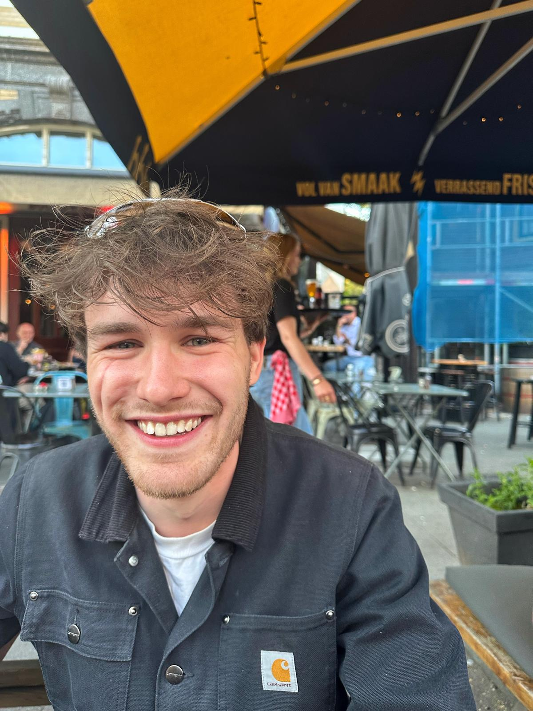

About me
Bart van Mourik
I combine industrial product design with practical making: furniture, interiors, repair work, and hands-on prototypes.
My work sits between design thinking and practical execution. Through my portfolio work and BM Klusservice, I focus on custom interiors, small build projects, mobility ideas, and prototypes that can be tested and improved by making them.